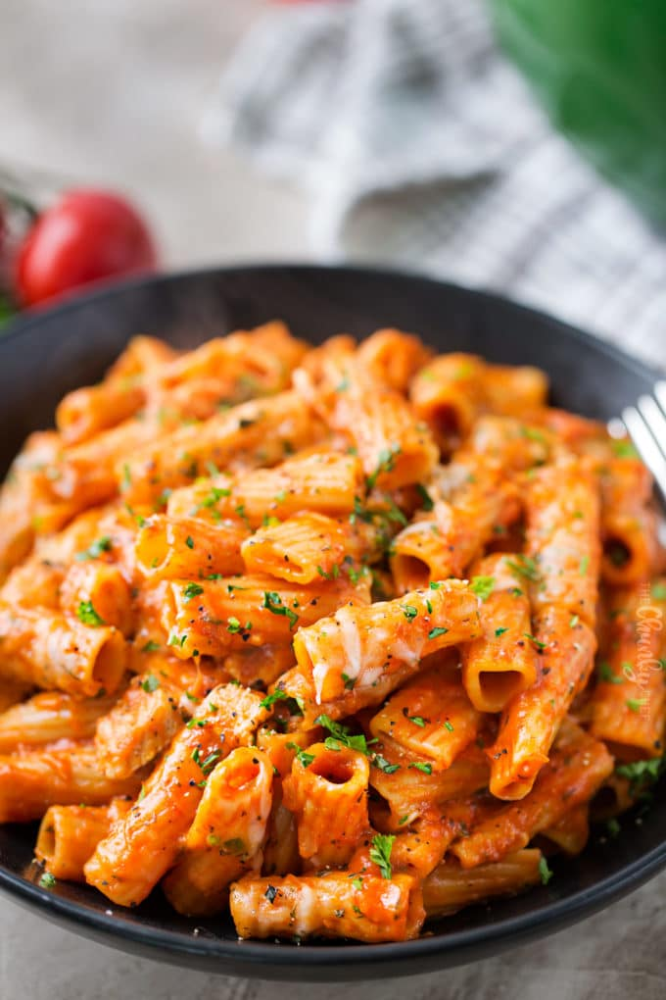

One Pot Chicken Parmesan Pasta

Description
Do you love chicken parmesan, but don’t love all the dishes that come with it? Then this is the dish for you! One pot, 30 minutes! The pasta cooks in the pot with all the sauce and chicken, making it super flavorful!
In case your family isn’t licking the pot clean by the time dinner is over, this pasta reheats well for lunch the next day!
Ingredients
- 2-3 boneless skinless chicken breasts, diced into bite sized pieces
- 1 tsp Italian seasoning
- 1/2 tsp garlic powder
- 1 medium yellow onion, minced
- 3 cloves garlic, minced
- 16 oz dried short-cut pasta (I used rigatoni)
- 24 oz jar of your favorite marinara sauce
- water to fill empty marinara sauce jar
- 1 cup mozzarella cheese
- 1/2 cup parmesan cheese
- salt and pepper, to taste
- additional dried Italian seasoning, optional
- fresh parsley and/or basil, minced for garnish
Steps
- To a large pot or skillet (I used my dutch oven), add a drizzle of olive oil and heat over MED-HIGH heat. Add chicken, season with salt, pepper, Italian seasoning and garlic powder. Cook about 5 minutes, until chicken is most of the way cooked through. Remove to a plate.
- Add onion and garlic to the pot and cook about 2-3 minutes, until soft. Pour in marinara sauce, fill up empty sauce jar with water and add to the pot. Bring to a boil, then reduce to a strong simmer.
- Add chicken and pasta, stir, then cover and cook for 10-15 minutes, until pasta is cooked to your liking. Stir in parmesan cheese and 1/4 cup of the mozzarella cheese.
- Sprinkle remaining 3/4 cup mozzarella cheese on top of the dish and cook another 2-3 minutes, until cheese is melted and gooey.
- Sprinkle with additional Italian seasoning if desired, and garnish with parsley or basil.